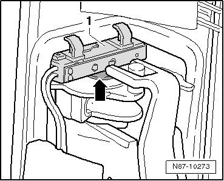
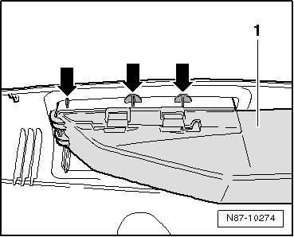

Cabin Ventilation Duct: Service and Repair
B-Pillar Side Vents
- Remove B-pillar side trim.
Also for vehicles with 4-zone Climatronic:
- Disconnect harness connector to vent.

- Unclip light unit - 1 - - arrow -.
All vehicles:

- Cut away tabs at outlet grille - arrows -.
- Unclip air channel - 1 -.
- Remove grille forward from B-pillar trim.